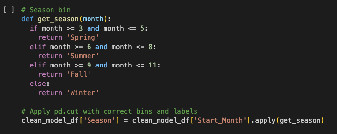
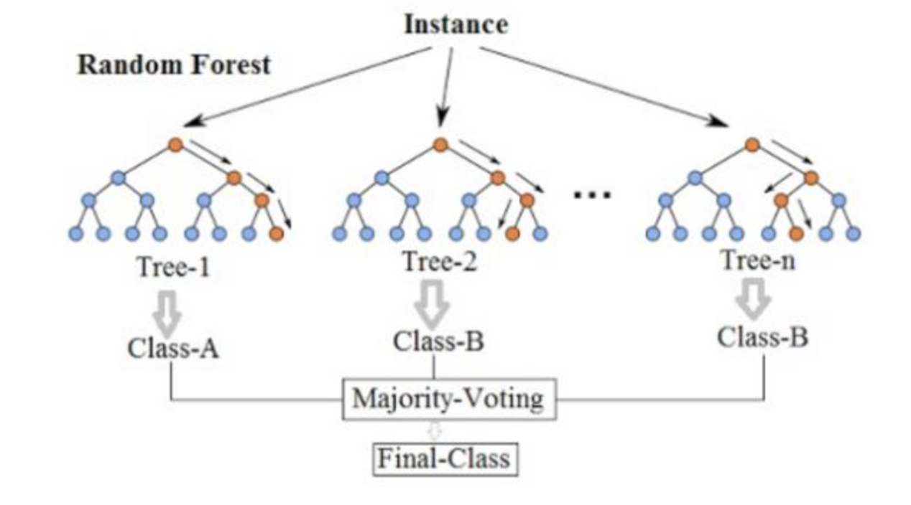
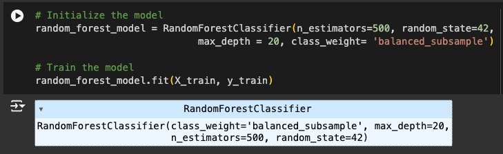

Initially, we cleaned the raw dataset in the data cleaning section of the notebook, transforming it into a more manageable format. Data cleaning is a crucial step in the data preprocessing pipeline for machine learning, involving the identification and correction of errors or inconsistencies to ensure high-quality data that is suitable for analysis or model training. Additional preprocessing was required to prepare the data for modeling, specifically for the Random Forest model.
We loaded the cleaned data from our S3 bucket in a manner similar to the data cleaning section. The preprocessing steps included:
Following these steps, we applied Label Encoding to convert categorical features into numerical labels, setting the stage for model training with a Random Forest classifier.
We employed predictive modeling to classify and forecast the severity of traffic accidents using the Random Forest model. the random forest is a meta estimator that fits a number of decision tree classifiers on various sub-samples of the dataset and uses averaging to improve the predictive accuracy and control over-fitting.
The image below indicates the final model configuration.
| Precision | Recall | F1-Score | Support | |
|---|---|---|---|---|
| Non-severe | 0.92 | 0.83 | 0.87 | 184,051 |
| Severe | 0.35 | 0.55 | 0.43 | 30,415 |
| Accuracy | 0.79 | 214,466 | ||
| Macro avg | 0.64 | 0.69 | 0.65 | 214,466 |
| Weighted avg | 0.84 | 0.79 | 0.81 | 214,466 |
The classification report shows how well the model performs for each class:
Overall, the model is strong in predicting "Non-severe" but less effective for "Severe" cases.The Random Forest model is 79% accurate. However, to understand how well the model performed, we need to compare the results for non-severe versus severe accidents.
The model performed well in predicting non-severe accidents, with a precision of 92% and a recall of 83%. This means the model accurately identifies most non-severe accidents. This is important for traffic management systems because it accurately identifies most low-severity accidents.
However, he model struggled with predicting severe accidents. It achieved only 35% precision in predicting severe accidents, meaning it misclassified 65% of cases as severe when they were not. The recall for severe accidents is 55%, indicating the model catches a little over half of the actual severe accidents but misses about 45%. Due to the lower precision and recall scores for severe accidents, there is a potential risk for the system, as it may misclassify severe accidents, either failing to predict them or overestimating their likelihood.
Further efforts could include experimenting with different hyperparameters or balancing techniques to continue improving the model's ability to accurately predict severe cases. Continued fine-tuning will be important as the model is applied to real-world data to ensure it performs consistently well across all classes.